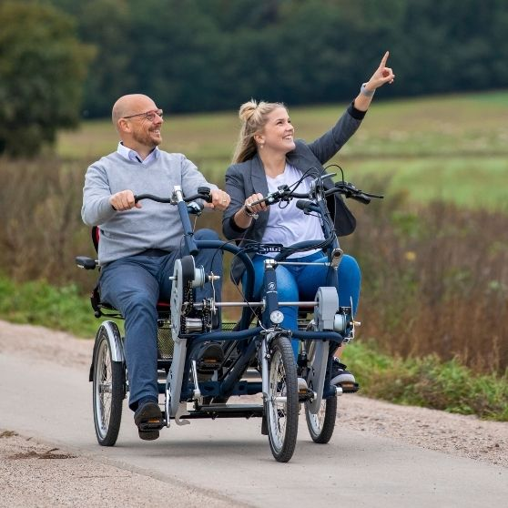
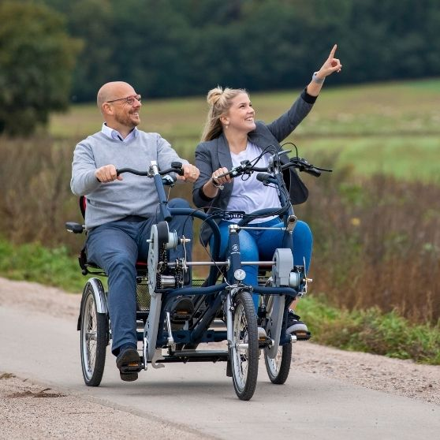
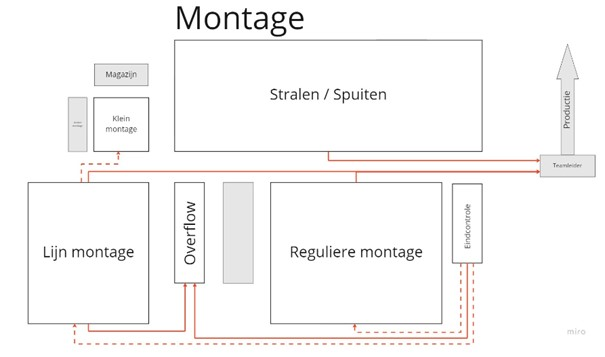
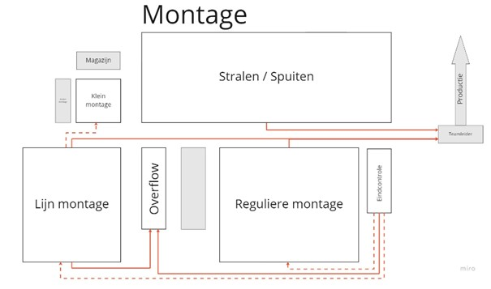

Over mij
Mijn naam is Daan Hendriksen. Ik ben geboren op 20-02-2001 in Zevenaar. Ik ben opgegroeit in het kleine dorpje Wehl,
dit ligt vlakbij Doetinchem, in de Achterhoek!
Vanuit de jeugd was ik altijd bezig met het ophalen van apparatuur, en keek vaak met mijn vader mee als er iets gemaakt
op gerepareerd moest worden. Vanuit deze ervaring en plezier in de techniek heb ik gekozen voor de opleiding Elektrotechniek.
Deze opleiding volg ik op de HAN in Arnhem. Nu in Semester 7 is het tijd voor een minor, ik heb gekozen voor de minor: Smart Industry
Maar waarom deze minor?
Ik vind de techniek erg leuk en de nieuwe ontwikkelingen zijn erg intressant, De opleiding zelf gaat soms erg diep op de techniek in. Zelf vind ik de sprong naar het commerciële en het bedrijfskundige erg bijzonder en intressant. Deze minor is denk ik ook een mooie brug tussen de nieuwste techniek en de bedrijfskunidge kant.Leerdoelen
Tijdens deze minor is het hoofddoel om aan je leerdoelen te werken. Mijn leerdoelen zijn:
- Samenwerken met andere "sectoren"
- Meer inzicht krijgen in het bedrijfskundige kant van een organisatie
- De juiste link kunnen leggen tussen techniek en bedrijfskundige
- Begrijpen hoe een bedrijf kan veranderen, en welke gevolgen dit met zich mee brengt.
Tijdens de minor heb ik op verschillende manieren aan deze leerdoelen gewerkt. Ik heb actief meegedaan met de workshops, tijdens het project heb ik (/we)
ook rekening gehouden met de bedrijfskundige gevolgen van de verandering en ik heb samengewerkt met de verschillende opleidingen
Terugblik
Ik kijk positief terug op deze minor, ik heb dit halfjaar veel geleerd en ben erg tevrede over het eindresultaat. Vooral het project bij Van Raam zal ik niet snel vergeten. Het was erg leuk om de kennis wat je leert tijdens de workshop toe te passen in het project. De workshops waren leerzaam en intressant om te volgen, ook de gastsprekers hadden allemaal een boeiend verhaal.
Smart Me
In de workshop Smart Me gaan alle activiteit over profesionele persoonlijke groei.
Kick off
Op woensdag 31 augustus was de eerste kennismaking met elkaar. De docenten en studenten leren elkaar kennen op een speelse wijze.
Ook werden er op Post-Its ieder zijn eigen vaardigheden geschreven worden. Deze werden gesorteerd op de borden. Hierdoor was te zien welke vaardigheden goed bij elkaar hoorden. Ook kan er hierdoor goed gezien worden welke vaardigheden er van elkaar te leren valt.
{kind=link}
{kind=link}
Samenwerken
Aan de hand van een educatieve kookworkshop werd geleerd om samen te werken. In het begin was het erg chaotisch, en er was geen duidelijke structuur.
Toen kwam Jason met een tijdschema, waardoor er in ieder geval een einddoel was. Het gerecht wat wij moesten maken was het voorgerecht, en Jason wist vrij snel wat wij als groep wilde creëren.
Halve wegen werd er een nieuwe box met producten neer gezet (opdrachtgever komt met extra wens), hier werd niks tot nauwelijks meegedaan. Hier werd op gecorrigeerd, en dit was voor iedereen een wijze les.
Smart Journey
In de workshop over Smart Journey, ging het over ons zelf. Hierbij was het lastig om naar jezelf te kijken en bepaalde vragen te beantwoorden. Het is wel goed om te doen, je leert zo jezelf goed kennen en je weet waaraan je moet gaan werken.
Wicked questions
De wicked questions die ik opgesteld heb zijn:
-Hoe kom ik op de functie die ik mezelf graag zie doen terwijl er genoeg andere zijn die dat ook willen.
-Hoe kan ik mezelf blijven focussen terwijl ik een redelijk slechte concentratie heb.
-Hoe kan ik mij volledig focussen op mijn studie terwijl er ook genoeg andere leukere dingen te doen zijn.
Door deze vragen te beantwoorden, zul je de onzekerheden die je hebt wegnemen.
Hoe word je gezien, en welke betekenis heeft dit?
Smart Work
De lezing welke gegeven werd ging over de huidige (technische) arbeidsmarkt. Er is veel krapte op deze markt, maar dit bied ook kansen. Het manier van vacatures opstellen en solliceteren zal anders moeten worden. Op dit moment wordt er alleen maar naar scholing en diploma gekeken. Echter zijn er veel meer kwaliteiten bij een mens dan een diploma of scholing. Ik vond dit een erg boeiend verhaal. Ik ben ook van mening dat iemand met veel praktijk ervaring van grotere meerwaarde kan zijn, dan iemand met alleen maar theoretische kennis.
Brain Hacking
In deze lezing ging het over de werking van het brein. Dit is een onderwerp wat ik altijd erg intressant vind, maar het is lastig in te beelden.
Het is bijzonder hoe veel invloed jou gedrag heeft op iemand anders. Als jij veel gelijkenissen hebt met een persoon, wordt communiceren en samenwerken
een stuk gemakkelijker. Het raport (verbinding) creëren met een persoon is iets heel bijzonders. Wanneer je jezelf afspiegeld op een ander, zul je
sneller en een betere band met elkaar opbouwen.
De lezing was erg intressant, en gaat ook van grote meerwaarde zijn voor mij in de toekomst. Door te begrijpen hoe een ander jou ziet
kun je hier beter op in spelen, en kan er een betere band opgebouwd worden. Ook werden er verschillende tips gegeven, om te presenteren
voor een grote groep. Hier werden ook handige en bruikbare adviezen gegeven.
Smart Business
Slimme innovatieve veranderingen zijn technisch gezien uit te voeren, maar wat doen deze veranderingen voor het bedrijf? Tijdens de workshop Smart Business krijgen wij les over het bedrijfskundige kant over veranderingen in een bedrijf. Hierbij krijgen wij ook les in het begrijpen en in kaart brengen van bedrijven.
Waardepropositie
Hieronder is mij persoonlijke waardepropostitie te zien
AXA - case
Tijdens de (gast)-workshop over de AXA verzekering is er verder gekeken naar de waard propositie van (in dit geval) een verzekeringsmaatschappij. AXA kwam met een cases waarvoor wij (als studenten) uiteindelijk een innovatieve oplossing moeten bedenken. Hiervoor is het belangrijk dat de huidige situatie eerst in kaar gebracht wordt. Doormiddel van een Business Model Canvas is de huidige opbouw van het bedrijf inzichtelijk gemaakt.
Business Model Canvas
Dit was de eerste keer dat ik gewerkt heb met een BMC. Ik vond het in het begin lastig om mee aan het werk te gaan. Maar als je eenmaal door hebt hoe de canvas werkt, is het een gemakkelijke manier om snel een inzicht te krijgen in een nieuwe organisatie.
Vervolgens werd er gekeken naar welke innovatieve verandering het probleem van de WA-verzekering kan afnemen, dit was erg leerzaam. Door opnieuw een BMC te maken, kon je zien dat de waardepropostite van AXA verplaatste. Een kleine verandering kan grote gevolgen hebben voor de rest van het bedrijf
Bezoek aan Elk
Tijdens het bedrijfsbezoek bij ELK kregen wij als eerst een uitleg over op welke manier ELK te werk gaat, en welke cultuur er heerst in het bedrijf. Het is een erg plat bedrijf, en transparant naar alle medewerkers. Ook werd verteld hoe er vanuit hun oogpunt klantwaarde gecreëerd wordt, dit alles onder het motto: “Geen gedoe”. Vervolgens kregen wij een rondleiding door het bedrijfspand, hier viel mij op dat de kantoorruimtes volledig van glas waren, hierdoor creëer je veel transparantie. Ook werd er veel met post-its gewerkt, deze waren door het gele pand terug te zien. Na deze activiteiten werd het tijd voor ons. Omdat wij nu een beetje idee hadden over het bedrijf, en wat hun doen, moest er een verbetering voorgesteld worden voor ELK. Hierbij moest het een verbetering zijn met een “Smart Indusrty-toepassing”.
Verbetervoorstel
Samen met een groep hebben wij een verbetervoorstel gemaakt voor ELK. Hierbij was onze oplossing om de fysieke post-its te vervangen voor digitale post-its. Door de post-its digitaal te maken, kunnen deze ook bewaard en gearchiveerd worden. Deze data kan in de toekomst helpen om de zelfde situaties terug te halen. Ook kan er beter gemonitord worden wat, waar en hoe iedereen met een project bezig is.
Klik hier voor de presentatie!
Binklane workshop Agile & Scrum
In de middag, tijdens het bezoek aan ELK, werd ons een workshop gegeven door Blinklane over Agile werken. Hierbij kregen wij uitleg over de methodiek. Korte sprints, daily stand ups, en snelle deadlines. Op een actieve manier werd hiermee gewerkt, er was een soort “spel” opgezet, waarmee samengewerkt moest worden. Eerst kreeg je kort de tijd (daily stand up) om met je groep te bepalen wat je ging doen, vervolgens moesten bepaalde activiteiten uitgevoerd worden. De eerste keer zorgde dit voor grote chaos, maar hoe vaker en gestructureerde er te werk ging, hoe beter de activiteiten verliepen. Erg interessant om te horen en ervaren over Agile werken, hierbij vind ik vooral de korte sprints en de transparantie een erg prettige manier om een project aan te pakken.
Management game
Tijdens deze game kregen de verschillende studenten een “functie”, hierbij werd een omschrijving gegeven, en werd er duidelijk wat de belangen waren van de verschillende functies. Doordat iedereen andere belangen heeft, was er snel onenigheid tijdens het spel. De werknemers voelde vooral veel werkdruk, terwijl de directie meer bezig was om geld te besparen.
Het was er leerzaam, omdat je op deze manier inzicht krijgt in andere belangen. De management merkt op een duidelijke manier dat het personeel zich onprettig voelt, en in opstand komt. Maar ook het personeel krijgt inzichtelijk welke belangen er bij het management liggen.
Smart Connection
Voor het opzetten van deze portfolio is gebruik gemaakt van de workshop Smart Connection. Door de kennis van HTML, CSS en JS is deze website tot stand gekomen.
Eerste indruk
Als eerste opdracht moesten er verschillende termen aan elkaar gelinkt worden. Hoe ik deze aan elkaar gelinkt heb, is hieronder in de afbeeldingen te zien.
Verkennen
In het begin was het verkennen wat de mogelijkheden zijn met HTML, CSS en Javascript. Hiervoor moest er een webpagina omgebouwd worden tot een persoonlijke pagina. Het duurt even voordat de webpagina geopend is ;)
Webdevolpment
Om een volledige webpagina te creëen is kennis van HTML, CSS en JS vereist. Door in te zien hoe deze codes werken, kan er vrij snel een pagina gebouwd worden.
HTML
HTML is vooral belangrijk voor de opzet en inhoud van een pagina. HTML vind ik goed te begrijpen en kan goed toegepast worden.
CSS
CSS zorgt voor de opmaak van de webpagina, denk hierbij aan borders, kleuren en groottes. CSS vind ik, net als HTML, goed te begrijpen. Het is gemakkelijk toe te passen en het geeft snel een mooie verandering aan de website.
JS
Javascript wordt gebruik om de website iets smoother te laten verlopen. Ook verschillende animaties kunnen getoond worden met JS. JS vind ik zelf moeilijker toe te passen, echter begrijp ik de werking wel en kan het wel (waar nodig) aanpassen
API
Een API wordt gebruikt om actuele informatie op te halen uit een database van een andere website. Het uitwisselen van gegevens geeft een andere gebruiker weer meer mogelijkheden. Sommige informatie is open source, en hierdoor kan dus iedere gebruiker er van profiteren.
Smart Technology
Voor de workshop Smart Technology moest er een automatisch plantsysteem gemaakt worden. De stappen welke gemaakt zijn, zijn hieronder te zien. Het plantsysteem moet water geven wanneer de grond niet vochtig genoeg is, ook moet het licht krijgen wanneer het te donker is in de omgeving. Verder wordt de temperatuur en luchtvochtigheid gemonitord.
Code schrijven
Als eerst wordt er code geschreven. Eerst werden alle modules afzonderlijk getest. Zodra dit werkte, wordt alles samengehangen en gekoppeld. De code wat geschreven wordt, is voor de ESP32. Dit is een compacte versie van een Ardiuno. Deze boardjes zijn vrij eenvoudig te programmeren.
PCB ontwerpen
Om een compact en net geheel te krijgen, is een PCB een mooie oplossing. De draden zijn allemaal verwerkt in het bordje. En zo kunnen er minder
storingen optreden. De PCB wordt ontworpen in Eagle.
Eerst wordt er een schematisch PCB gemaakt (links), vervolgens zet de software dit om naar een layout (rechts). Hierop kunnen de verschillende
componenten op de gewilde plek gezet worden, ook kan er tekst opgeprint worden, en kunnen er (bout)gaten geplaats worden.
Solderen
Vervolgens worden de compenten (footers) op de pcb gesoldeerd.
Bakje ontwikkelen
3D ontwerpen
In de afbeelding hieronder is het ontworpen bakje te zien. In het bovenste gedeelte kan de PCB geschoven worden. Aan de onderkant kan het batterij pakketje geplaats worden. De kabels kunnen via de doorvoergaten aan de bovenkant naar "buiten"
3D printen
Het bakje is bij mij thuis geprint, deze is geprint met de Creality Ender 5. Het bakje bestaat uit 2 delen. Het bakje zelf, en de afsluitdeksel.
Smart Project
Om de kennis toe te passen in de praktijk, wordt er een project gedaan bij een bedrijf. Tijdens de bedrijvenmarkt werden er door verschillende bedrijven een pitch gehouden. Aan de hand van deze pitch moest een keuze opgegeven van de voorkeur. Mijn eerste keuze was Van Raam, en gelukkig is dit ook het bedrijf geworden waarbij het project uitgevoerd zal worden.
Dit project heb ik samen met Job Schieven uitgevoerd, onze bedrijfsbegeleider was Eric Drost
Van Raam
Van Raam is een fiestproducent gevestigd in Varsseveld. Echter zijn het niet zomaar fietsen, elke fiets bij Van Raam is uiniek. De fietsen zijn bedoeld voor invalide mensen. Het motto van Van Raam is "let's all cycle". Deze motto is ook echt waar Van Raam voor staat, iedereen kan fietsen, ongeacht welke handicap er is.
 

Projectomschrijving
Op de montage afdeling bij Van Raam worden de fietsen gemonteerd, de ruwe frames vanuit de productie worden op deze afdeling gestraal, gespoten en alles wordt op de fiets gemonteerd. Op de montage afdeling wordt er op verschillende manier kwaliteit gecontrolleerd, dit gebeurd deels digitaal, deels analoog en deels onder het 4 ogen principe. Echter wordt er nauwelijks iets geregistreerd of geanalyseerd, dit is erg jammer omdat je op deze manier het proces en product nooit zal kunnen verbeteren.
Hoofdvraag
"Hoe kan doormiddel van digitalisering de kwaliteitscontroles teruggekoppeld worden om het proces en product te verbeteren?"
Fase 1: Project aanpak
Het project is op een gestructureerde manier aangepakt. We hebben het project verdeeld in 4 fases:
Fase 1: Hoe gaan we het project aanpakken?
Fase 2: Wat is de huidige situatie?
Fase 3: Wat is de gewenste situatie?
Fase 4: Hoe kan de gewenste situatie gerealiseerd worden?
Door deze structuur toe te passen wordt er duidelijk en conreet naar een einddoel gewerkt. Elke 2 weken hebben wij een korte verandering met alle stakeholders. Door deze manier toe te passen zijn er vele feedback momenten en zal het eindresultaat dichterbij het gewenste resultaat komen. Doordat we de monteurs en andere medewekers constant inlichten over onze ideeën wordt er ook meteen draagvlak gecreërd.
Fase 2: Wat is de huidige situatie
Om goed inzicht te krijgen in de situatie hebben wij 1 week meegelopen op de montage afdeling. Hier hebben wij met name gekeken naar hoe en op welke manier de kwaliteit gecontrolleerd wordt. Uiteindelijk hebben wij een overzicht gemaakt van de "happy"- en "unhapy"flow. Deze zijn hieronder te zien.
 

Na elke fase is er een stakeholders meeting geweest, de presentatie van deze meeting is hieronder te zien.
Klik hier voor de presentatie!Fase 3: Wat is de gewenste situatie?
Om te bepalen wat gerealiseerd dient te worden, zijn er interviews en gesprekken gevoerd met verschillende medewerkers. Door deze gesprekken te voeren werd vrij snel inzichtelijk wat gewenst was.
Managers
De managers willen de cijfers inzichtelijk krijgen, dit aan de hand van een dashboard. Ook zijn ze van plan om een daily stand-up te gaan gebruiken, hier willen ze ook met cijfers aantonen wat er verbeterd moet worden.
Monteurs
De monteurs willen kwaliteit controleren, maar het moet een niet te grote last worden. Verder zouden ze het fijn vinden als hun missende onderdelen kunnen melden en dat de werkinstructies actueel zijn.
Fase 4: Hoe kan de gewenste situatie gerealiseerd worden?
Nu de gewenste situatie duidelijk is, kan de situatie gerealiseerd worden. Met behulp van Adobe XD, kan er op een gemakkelijke manier interfaces gecreëerd worden. De interfaces zijn in Van Raam stijl gemaakt. We hebben voor elke werklplek een invoerscherm ontworpen , op deze invoerschermen kunnen de monteurs de kwaliteitscontrole uitvoeren en de werkinstructies bekijken. Ook is er een dashboard gemaakt waarmee de cijfers inzichtelijk gemaakt worden.
Klik hier om naar het dashboard te gaan!
Klik hier om naar een invoerscherm te gaan!
Afronding
Als afronding van dit project hebben wij bij Van Raam een eindpresentatie gegeven en hebben we op de projectenbeurs gestaan.
Eindpresentatie
Tijdens de eindpresentatie bij Van Raam hebben wij kort onze bevindingen, onze realisatie producten en aanbevelingen getoond. Omdat we met alle stakeholders bij elkaar zaten en omdat dit allemaal andere afdelingen zijn, leek het ons leuk om te kijken of Van Raam gereed is voor de verandering. Dit hebben we gedaan met een mindmap welke we uitgelegd hebben gekregen tijdens een workshop van de minor. Deze is hieronder te zien.
In de afbeelding zijn veel groene bollen te zien, dit betekend dat Van Raam gereed is voor verandering, echter is het hierbij van belang dat de monteurs niet vergeten worden, en dat deze meegenomen worden in het veranderproces.
Projectenbeurs
Tijdens de projectenbeurs in de Meshallen hebben wij een ons project getoond aan alle aanwezige. Hierbij was er veel intresse van de aanwezige personen, ik vond het erg leuk om over ons project te vertellen. De bezoekers waren erg enthoussiast over onze uitwerkingen, dit is leuk om te horen.